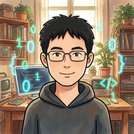

clover-games
休闲游戏平台
面向休闲娱乐的虚拟积分游戏平台，提供邀请码登录、签到、小游戏与对局记录，配套玩家管理、数据统计与流水审计后台；重点保障积分结算与数据一致性，避免重复发放与对账偏差。
我是梁小梁（Clover），16 年全栈开发经验（PHP / Vue3 / Go / Python），做过游戏平台、支付交易、IDC 业务平台与企业后台。2024 年起把 AI 变成主线工作方式：从 Cursor 的 IDE 内嵌，到 Claude Code 的命令行 Agent，再到 Codex / WorkBuddy / Trae Work 的多 Agent 协作，完成「IDE → 命令行 → Agent」的演进；模型以 GPT 系列为主力，混用 Claude 与国产 DeepSeek、GLM。近期几个项目均由 AI 深度参与交付。

AI Workflow
三年三次跃迁：从 IDE 内嵌补全，到命令行 Agent，再到多 Agent 协作交付。模型以 GPT 系列为主力，按场景混用 Claude 与国产模型。
2024
Cursor
IDE 内嵌
AI 补全与对话式重构，把编辑器变成结对伙伴。插件分析、代码重构与逻辑梳理先由 AI 出初稿，再人工校对，历史项目上手速度明显变快。
2025
Claude Code
命令行 Agent
从编辑器走向终端：由 AI 读取整个代码库、拆解需求、跨文件改代码并自行运行验证，开发从「写代码」变成「描述目标 + 审核产出」。
2026
Codex · WorkBuddy · Trae Work
多 Agent 协作
多个 Agent 并行承担调研、编码、调试与文档，从需求到可交付版本全链路推进；人负责目标拆解、方案取舍与验收，项目周期与改动成本都显著压缩。
模型组合：以 GPT 系列为主力（Codex 与 API 深度使用），Claude 辅助复杂重构与长上下文分析；国产 DeepSeek、GLM 在编码与方案生成上表现不错，按场景混用控制成本。
交付原则：AI 负责产出速度，人负责正确性——关键路径仍保留人工 Review、测试验收与上线核对，资金与权限相关逻辑逐条复核。
Advantages
业务积累：覆盖游戏大厅与钱包、支付交易、电商会员、IDC 资源管理及企业后台。
系统集成：对接支付、QQ / 微信 / 公众号登录、CRM、域名注册商（VeriSign）等第三方服务，梳理状态流转、幂等回调与数据一致性。
全栈交付：Laravel / ThinkPHP / CodeIgniter / WordPress·WooCommerce 搭配 Vue 3、React，可独立完成前后端开发与 Docker / Nginx 部署。
渐进重构：有 PHP4 / PHP5 遗留系统向 PHP7 升级的完整经验，通过 MVC + Service 分层、公共组件与接口规范改善可维护性，控制改造风险。
性能与稳定：结合 MySQL、Redis、Swoole 与 Nginx，处理缓存、慢查询、异步任务与线上问题排查。
资金链路：实现支付订单、幂等回调、资金流水核验与运营查账，强调可追溯、可对账与数据一致。
工作方式：日常以 Codex / WorkBuddy / Trae Work 多 Agent 协作推进开发，Cursor、Claude Code 负责代码分析与重构；主模型为 GPT 系列，混用 Claude 与国产 DeepSeek、GLM。
应用集成：在运营后台接入大语言模型、AI 图片 / 视频生成（即梦）与数字人（HeyGen）能力，打通从文案到素材的内容生产链路。
工程落地：持续开发 AI 模型网关、工作流编排与 RAG 知识库，关注鉴权限流、额度计费、任务追踪与结果管理。
Projects
近期开发的四个项目，覆盖游戏业务、工作流自动化、AI 模型接入与内容运营，开发过程均由 AI 深度参与。
clover-games
面向休闲娱乐的虚拟积分游戏平台，提供邀请码登录、签到、小游戏与对局记录，配套玩家管理、数据统计与流水审计后台；重点保障积分结算与数据一致性，避免重复发放与对账偏差。
clover-workflow
面向重复业务与内容生产的可视化工作流服务，支持串行流程编排、异步执行、定时触发和运行追踪，并提供生成渠道接入、角色播报视频制作及资产管理，用于替代重复的人工内容生产。
cloverapi
基于 New API 扩展的 AI 模型接入与管理平台，统一 GPT、Claude 及国产模型的调用入口，提供渠道管理、访问鉴权、请求限流、用量统计与额度计费，覆盖对话、图像和音频等场景。
clovergeo
面向企业内容运营的 GEO 业务平台，提供管理、代理和客户三端，覆盖客户与套餐管理、关键词和知识库维护、AI 文章生成、内容审核及发布任务管理，串联内容生产与代理业务流程。
Timeline
Education
广东工业大学 · 本科 · 电子科学与技术
2006 — 2010大学英语四级 · 计算机三级
Contact
欢迎交流全栈开发、遗留系统重构与 AI 应用相关机会。期望城市广州 · 期望薪资 16-25K · 可随时到岗，支持全职或兼职合作。点击卡片可复制联系方式。